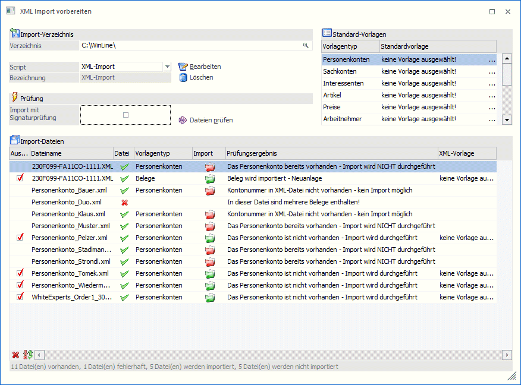
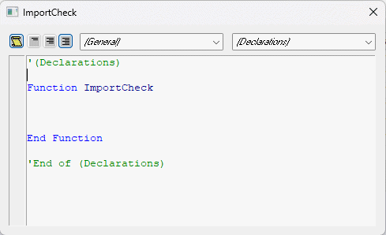
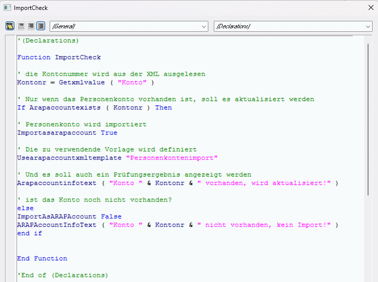
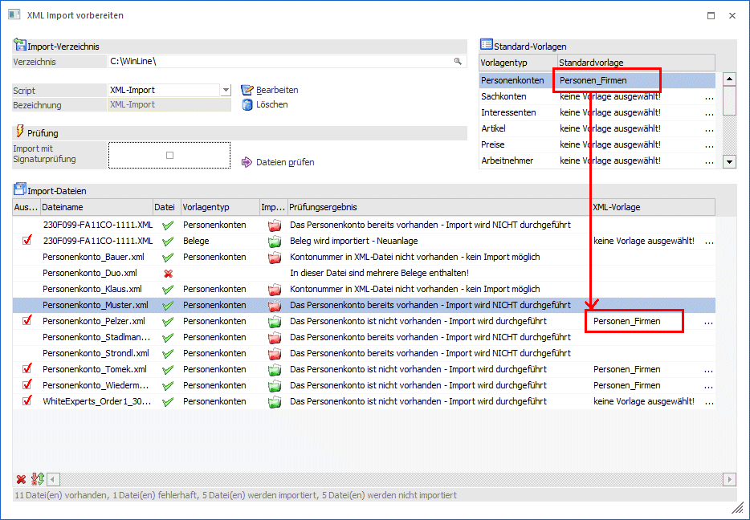
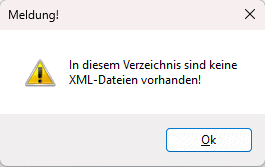
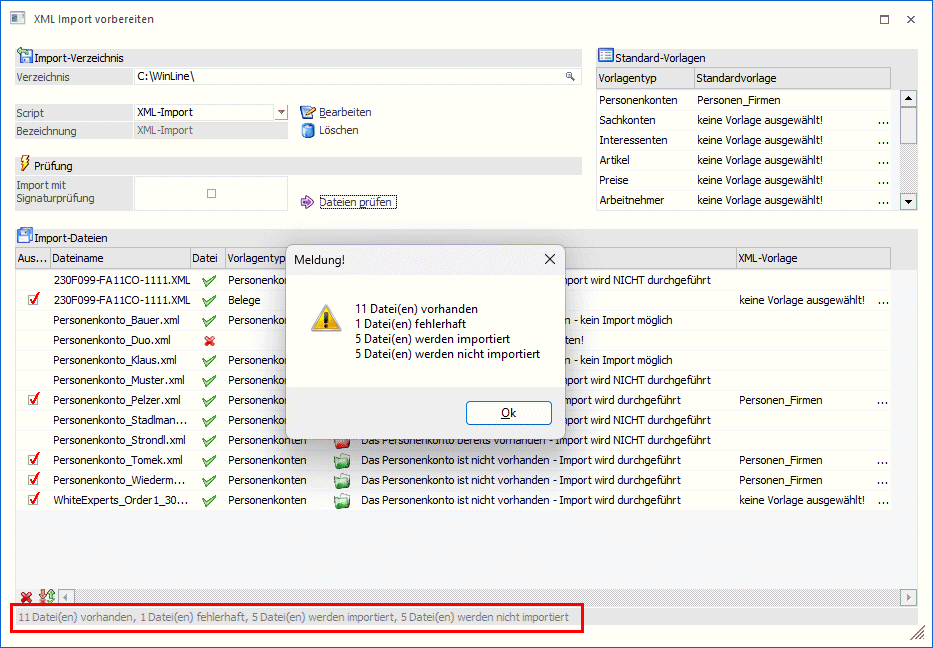
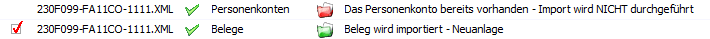
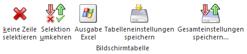
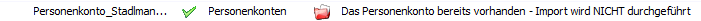

Im Menüpunkt "XML Import vorbereiten" kann im Vorfeld mittels VB-Script bestimmt werden, ob XML-Dateien importiert werden sollen bzw. wie und mit welcher Vorlage dies erfolgen soll.

Ø Import-Verzeichnis
Im Feld "Import-Verzeichnis" muss jenes Verzeichnis angegeben werden, indem sich die zu importierenden bzw. zu prüfenden Dateien befinden. Mittels Matchcode kann nach dem Verzeichnis gesucht werden. Das zuletzt verwendete Verzeichnis wird benutzerspezifisch gespeichert.
Ø Script
Aus der Auswahllistbox kann ein Script gewählt werden, welches zur Anwendung kommen soll. Standardmäßig wird jenes Script vorgeschlagen, dass zuletzt, bei Verwendung des angegebenen Importverzeichnisses (im jeweiligen Mandanten), gewählt war.
Wurde ein Script gewählt, so kann dies mittels den Buttons "Bearbeiten" oder "Löschen" entsprechend bearbeitet oder gelöscht werden.
Mit dem Eintrag "Neuanlage" können neue Scripts erfasst werden. Diese stehen mandantenübergreifend zur Verfügung. Wird der Eintrag "Neuanlage" gewählt und anschließend der Button "Bearbeiten" gedrückt, so kann in einem weiteren Eingabefeld die Bezeichnung des Scripts angegeben werden.
Nach bestätigen der Eingabe in der Bezeichnung wird das Fenster zur Erfassung des Scripts geöffnet.

Im Script stehen folgende Möglichkeiten zur Verfügung:
ü Auslesen von Werten aus der
XML-Datei
Bsp.: Kontonr = GetXMLValue ( "Konto" )
ü Festlegen mit welchem Typ und
welcher Vorlage die Datei importiert werden soll
Bsp.:
UseARAPAccountXMLTemplate "Personenkontenvorlage"
ü Rückgabe eines Infotextes der als
Prüfungsergebnis angezeigt wird
Bsp.: ARAPAccountInfoText ( "Konto " &
Kontonr & " nicht vorhanden, kein Import!" )
ü Auslesen von Werten aus
definierten Tabellen des Datenstandes
Bsp.:
Xmlimportscripts.Getvalue(55,3)
Beispiel
Bereits vorhandene Personenkonten sollen mit den Importdaten aktualisiert werden:

Zusammenfassung der zur Verfügung stehenden "ImportCheck"-Funktionen im VB-Script:
ü Allgemein:
CString GetXMLValue ( LPCTSTR Tag )
CString GetXMLAttribute ( LPCTSTR Tag, LPCTSTR Attribute )
CString GetXMLType ( )
ü Personenkonten:
BOOL ARAPAccountExists ( LPCTSTR Accountnumber )
BOOL LoadARAPAccount ( LPCTSTR Accountnumber )
ImportAsARAPAccount ( BOOL Import )
UseARAPAccountXMLTemplate ( LPCTSTR Template )
ARAPAccountInfoText ( LPCTSTR InfoText )
ü Sachkonten:
BOOL GLAccountExists ( LPCTSTR Accountnumber )
BOOL LoadGLAccount ( LPCTSTR Accountnumber )
ImportAsGLAccount ( BOOL Import )
UseGLAccountXMLTemplate ( LPCTSTR Template )
GLAccountInfoText ( LPCTSTR InfoText )
ü Interessenten:
BOOL ProsCustomerVendorExists ( LPCTSTR ProsCustomerVendornumber )
BOOL LoadProsCustomerVendor ( LPCTSTR ProsCustomerVendornumber )
ImportAsProsCustomerVendor ( BOOL Import )
UseProsCustomerVendorXMLTemplate ( LPCTSTR Template )
ProsCustomerVendorInfoText ( LPCTSTR InfoText )
ü Artikel:
BOOL ProductExists ( LPCTSTR Productnumber )
BOOL LoadProduct ( LPCTSTR Productnumber )
ImportAsProduct ( BOOL Import )
UseProductXMLTemplate ( LPCTSTR Template )
ProductInfoText ( LPCTSTR InfoText )
ü Belege:
BOOL VoucherExists ( LPCTSTR Accountnumber, LPCTSTR Serialnumber )
BOOL LoadVoucherHeader ( LPCTSTR Accountnumber, LPCTSTR Serialnumber )
BOOL VoucherPrinted ( LPCTSTR Accountnumber, LPCTSTR Serialnumber )
ImportAsVoucher ( BOOL Import )
UseVoucherXMLTemplate ( LPCTSTR Template )
VoucherInfoText ( LPCTSTR InfoText )
ü Buchungsstapel:
ImportAsTransactionBatch ( BOOL Import )
UseTransactionBatchXMLTemplate ( LPCTSTR Template )
TransactionBatchInfoText ( LPCTSTR InfoText )
Ø Standardvorlagen
Aus der jeweiligen Auswahllistbox (Standardvorlage für Personenkonten, Belege, Buchungsstapel) kann eine so genannte Standardvorlage gewählt werden die in weiterer Folge, sofern nicht über Script übersteuert und sofern gültig für die zu importierenden Dateien, automatisch der Importdatei zugewiesen werden.

Ø Import mit Signaturprüfung
Wird diese Option aktiviert, so werden die vorbereiteten Dateien nicht in den Menüpunkt "XML Import" übergeben sondern in den Menüpunkt "Signaturserver Import". Dabei ist jedoch zu beachten, dass in diesem Fall "nur" Belege und Buchungsstapel übernommen werden können. Ob diese Option gesetzt ist oder nicht ist wird mandantenabhängig pro Importverzeichnis und Benutzer gespeichert.
Voraussetzung dafür dass diese Option grundsätzlich zur Verfügung steht ist, dass eine Lizenz für den Signaturserver vorhanden ist.
Ø Dateien prüfen
Durch Drücken dieses Buttons werden die XML-Dateien aus dem gewählten Verzeichnis eingelesen und mittels VB-Script geprüft. Sind im angegebenen Verzeichnis keine XML-Dateien enthalten wird dies mit entsprechender Meldung angezeigt:

Das Ergebnis dieser Prüfung wird in der Tabelle dargestellt; parallel dazu wird auch ein Protokoll auf dem eingestellten Drucker ausgegeben. Das Ergebnis der Prüfung (wie viele Dateien können importiert werden usw.) wird in einem eigenen Fenster dargestellt und zusätzlich im Fenster "XML Import vorbereiten" in einer Statuszeile angezeigt.

In der Tabelle werden der Dateiname, der Dateistatus (gültige XML-Datei?), der verwendete Vorlagentyp, das Ergebnis der Prüfung und die XML-Vorlage angezeigt. Jene Dateien, die zum Import bereitstehen (zu erkennen am grünen Importkennzeichen), können manuell mittels Checkbox noch manuell selektiert bzw. deselektiert werden. Dazu stehen auch die Tabellenbuttons "Keine" und "Umkehren" zur Verfügung.
In der Tabelle ist es zusätzlich noch möglich, eine XML-Vorlage manuell auszuwählen, wobei auch hier die Prüfung erfolgt, ob die gewählte Vorlage für die Importdatei gültig ist.
Hinweis:
Im Falle, dass aus einer XML-Datei z.B. ein Konto importiert werden soll und aus der gleichen XML-Datei ein Beleg, so kann eine Datei mehrfach in der Tabelle angezeigt werden.

Tabellenbuttons

Ø keine Zeilen selektieren
Mit dieser Funktion können alle Zeilen deaktiviert werden.
Ø Selektion umkehren
Durch Anwählen dieses Buttons werden alle aktivierten Datensätze deaktiviert bzw. alle deaktivierten Datensätze aktiviert.
Ø Ausgabe Excel
Durch Anwahl des Buttons "Ausgabe Excel" wird der Inhalt der Tabelle nach Microsoft Excel übergeben.
Ø Tabelleneinstellungen speichern
Die Spalten einer Tabelle können grundsätzlich an beliebige Positionen verschoben, bzw. in der Breite entsprechend angepasst werden. Durch Anwahl des Buttons "Tabelleneinstellungen speichern" werden die Einstellungen benutzerspezifisch gespeichert und bei dem nächsten Aufruf des Programmpunktes wieder vorgeschlagen.
Ø Gesamteinstellungen speichern
Im Gegensatz zu "Tabelleneinstellungen speichern" können mit "Gesamteinstellungen speichern" mehrere Tabellenaufbauten gespeichert und nach Wunsch geladen werden. Zusätzlich werden Sonderfunktionen der Tabelle (z.B. "Spalte gruppieren") ebenfalls bei der Speicherung bedacht.
Buttons
Ø OK
Durch Drücken des OK-Buttons werden alle in der Tabelle gewählten Dateien je nach "Importstatus" in folgende Unterverzeichnisse des Quellverzeichnisses verschoben:
ü Import (jene Dateien die importiert werden können)
ü KeinImport (jene Dateien die lt. Status nicht importiert werden sollen)

ü Fehler (jene Dateien die ungültig sind
Der Dateiname wird dabei um den verwendeten Vorlagentyp und die XML-Vorlage erweitert. Beim Verschieben der Dateien kann es dazu kommen, dass aus einer Datei im Ursprungsverzeichnis mehrere Dateien für mehrere Vorlagentypen erzeugt werden.
Anschließend wird das Fenster geschlossen und sofort der Menüpunkt "XML-Import" mit dem übergebenen "Import"-Verzeichnis geöffnet. War die Option "Import mit Signaturprüfung" gesetzt, so wird anstelle des Menüpunktes "XML-Import" das Fenster "Signaturserver-Import" geöffnet.
Ø Ende
Mit dem Ende-Button wird das Fenster geschlossen.
Ø Datei anzeigen
Wird dieser Button aktiviert, so wird der Inhalt der aktuell gewählten XML-Datei dargestellt. Die Einstellung ob dieser Button gedrückt oder nicht gedrückt ist wird pro Benutzer gespeichert und beim nächsten Öffnen des Fensters wieder hergestellt.